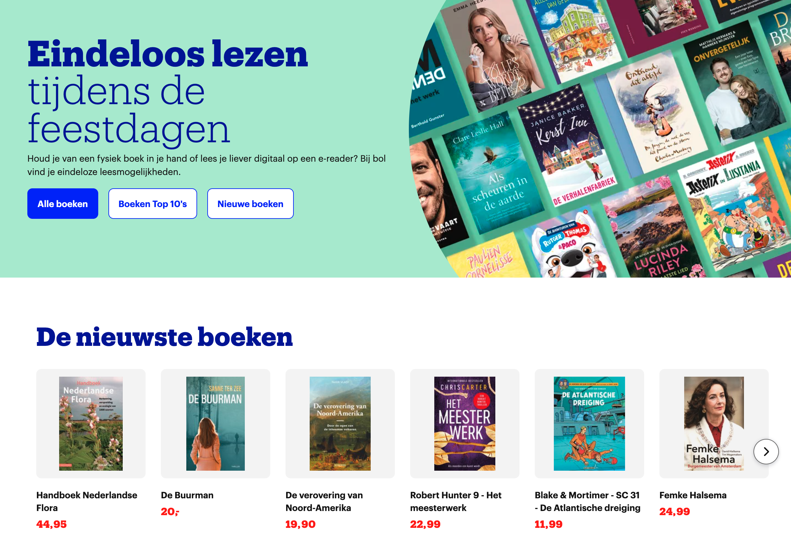

Inleiding
Usability (gebruiksvriendelijkheid) gaat niet alleen over of een website er mooi uitziet. Het gaat erom of de website werkt voor iedereen. Denk hierbij aan mensen die kleurenblind zijn, slechtziend zijn, of hun muis niet kunnen gebruiken vanwege een motorische beperking.
In deze opdracht kruip je in de huid van deze gebruikers. Je gaat ervaren hoe frustrerend slecht design is, je leert hoe je websites kunt 'keuren' (auditen) en je past je eigen portfolio aan zodat deze handicap-proof is.
Voorkennis
Voor deze opdracht heb je basiskennis nodig van:
- HTML (structuur en tags zoals
<h1>,<a>,<img>). - CSS (kleuren, fonts en states zoals
:hover). - De browser 'Inspecteur' (DevTools).
Deel 1: De Frustratie Zone
Doel: Ervaar zelf hoe belangrijk goede usability is.
Opdracht A: The User Inyerface Game
Ga naar UserInyerface.com. Dit is een 'spel' ontworpen om zo irritant mogelijk te zijn.
- Probeer het formulier zo snel mogelijk in te vullen.
- Noteer 2 dingen die je mateloos irriteerden (bijv. onduidelijke knoppen, trage pop-ups).
Opdracht B: De "Cognitieve Overload"
Bekijk een beruchte website zoals PNWX.com. Probeer de prijs van een specifiek product te vinden.
Vergelijk jouw ervaring met de afbeelding hieronder. Zie je hoe een gebrek aan witruimte en structuur zorgt voor chaos in je hoofd?

Deel 2: De Audit (Keuring)
Doel: Analyseer je eigen portfolio (of een schoolsite) met professionele tools.
Open je eigen portfolio in Google Chrome en voer de volgende checks uit.
Stap 1: De Kleurenblinden-check
Chrome heeft een ingebouwde simulator voor visuele beperkingen. Zo kun je zien of je rode foutmeldingen wel zichtbaar zijn voor iemand die geen rood ziet.
- Rechtermuisklik op je pagina → Inspecteren.
- Open het commando-menu met
Ctrl+Shift+P(Windows) ofCmd+Shift+P(Mac). - Typ "Rendering" en selecteer Show Rendering.
- Scroll naar beneden naar Emulate vision deficiencies en kies 'Protanopia' of 'Blurred vision'.
Stap 2: Contrast & Kleur
Tekst moet voldoende contrast hebben met de achtergrond. Lichtgrijs op wit is bijvoorbeeld onleesbaar voor veel mensen.
- Gebruik de WebAIM Contrast Checker.
- Vul de HEX-code van je tekst en je achtergrond in.
- Je moet minimaal de score AA (Pass) halen.
Stap 3: De Muisloze test
Leg je muis weg. Gebruik alleen de Tab-toets en Enter. Kun je door je menu
navigeren? Zie je aan welk linkje je selecteert?
Deel 3: Het Redesign
Doel: Pas je portfolio aan op basis van de audit.
Zorg dat jouw code voldoet aan de volgende vier eisen. Als je nog geen portfolio hebt, maak dan een mock-up/ontwerp die hieraan voldoet.
- Semantische HTML: Gebruik
<button>voor knoppen en<a>voor links. Gebruik koppen (h1-h6) in de juiste volgorde. - Alt-teksten: Voeg aan elk plaatje een beschrijving toe:
<img src="foto.jpg" alt="Portretfoto van Jan met een laptop"> - Focus States: Zorg dat gebruikers zien waar ze zijn als ze tabben. Dit doe je met
CSS:
a:focus, button:focus { outline: 3px solid blue; background-color: #f0f0f0; } - Contrast: Pas je kleuren aan zodat ze slagen voor de WebAIM test.
Deel 4: Verantwoording
Maak een pagina aan op je portfolio met de volgende onderdelen:
- Voor & Na: Screenshots van je oude (foute) ontwerp en je nieuwe (toegankelijke) ontwerp.
- De Oplossing: Leg uit wat je technisch hebt aangepast (bijv. "Ik heb de kleur geel donkerder gemaakt voor beter contrast").
- Lighthouse Score: Draai in Chrome Inspecteur een 'Lighthouse' rapport. Maak een screenshot van je score op het kopje 'Accessibility' (streef naar 90-100).
Beoordelingsmodel
| Categorie | 0 Punten | 1 Punt | 2 Punten | 3 Punten | 4 Punten |
|---|---|---|---|---|---|
| Analyse (Deel 1 & 2) | Geen analyse aanwezig. | Problemen vaag omschreven ("het was lelijk"). | Problemen gekoppeld aan usability-principes, tools gebruikt. |
Havo: Diepe analyse met screenshots van DevTools/WebAIM. VWO: Daarnaast koppelt de leerling de problemen aan WCAG-richtlijnen (A/AA) en benoemt welk niveau niet gehaald wordt. |
N.v.t. |
| Toepassing (Deel 3) | Geen aanpassingen gedaan. | Contrast verbeterd, maar HTML is rommelig. | Contrast en HTML zijn goed, focus-states ontbreken. |
Havo: Site is volledig toegankelijk (Contrast, HTML, Focus, Alt-tags). VWO: Daarnaast gebruikt de leerling ARIA-labels en heeft de site getest met een screenreader. |
De leerling heeft een eigen toegankelijkheids-checklist gemaakt of de site getest met echte gebruikers (bijv. klasgenoot met de ogen dicht). |
| Verantwoording | Ontbreekt. | Alleen screenshots, geen tekst. | Goede uitleg, maar bewijs (Lighthouse score) ontbreekt. |
Havo: Helder verslag met voor/na bewijs en Lighthouse score ≥90. VWO: Daarnaast reflecteert de leerling op wat er nog verbeterd kan worden en welke beperkingen de audit had. |
N.v.t. |
Cijfer = (totaal aantal punten / 10) * 9 + 1